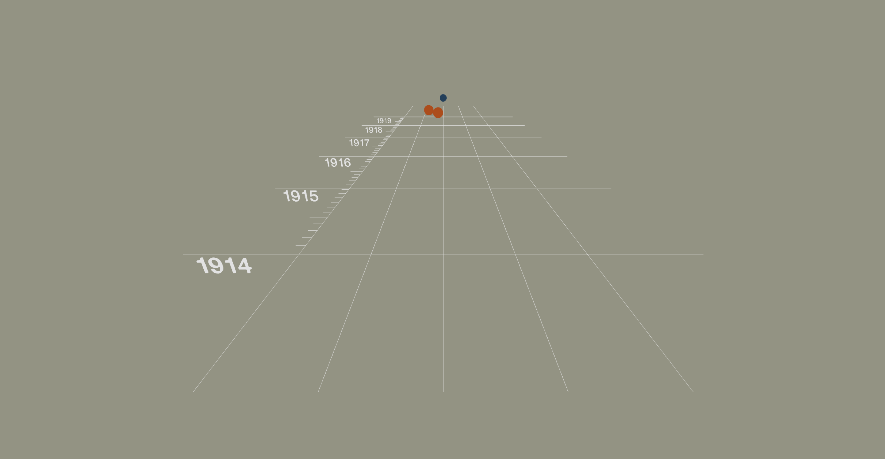
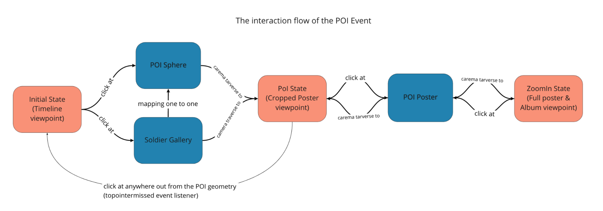

Work In Progress Documentation
Implemented of the timeline platform
The implementation of the timeline platform could be divided into the collection of ‘Lines‘ and ‘TextLabels’. ‘BufferGeometry’ and ‘LineMaterial’ are used to generate lines as documented in three.js best practice, meanwhile, wrapping it around the react component and using props to make it reusable. The same implementation approach applies for ‘TextLabels’ as well to make it versatile. Then, these components were mapped based on the PoI date and pre-set platform settings.
Co-designed new event systems by reducing states
After some implementation and discussion between two of me and Jerry, we figured: 1.Making every object in 3D is easier than having some UI elements overlay 2. Just scrolling through the timeline could be felt weak in terms of interaction 3. We could make better use of our environment 4. Implementing camera movement and positioning some additional elements on the scene is less work compared to their effect So, we discussed about what is feasible and what would be more interactive, and we came up some changes that alter the interaction and design. The interaction scenario is and rough camera angle is shown in the drawing here.
